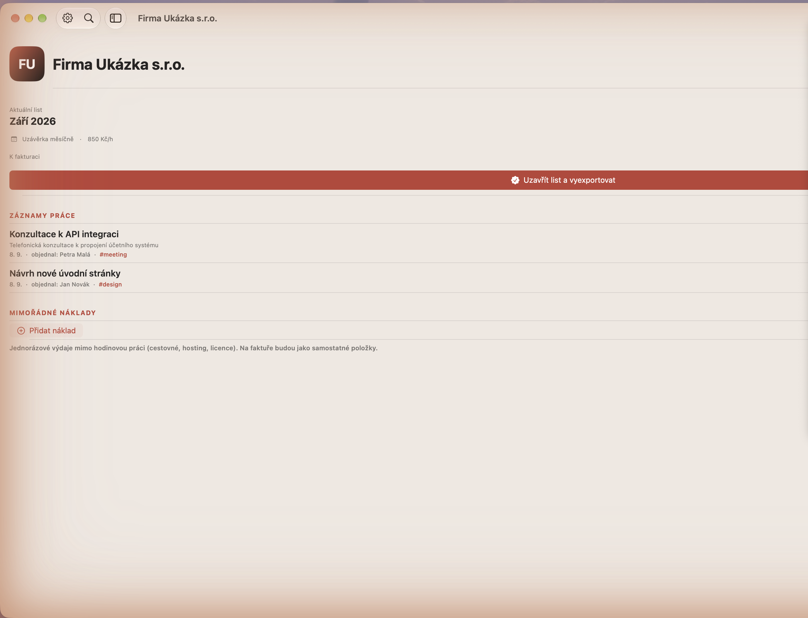
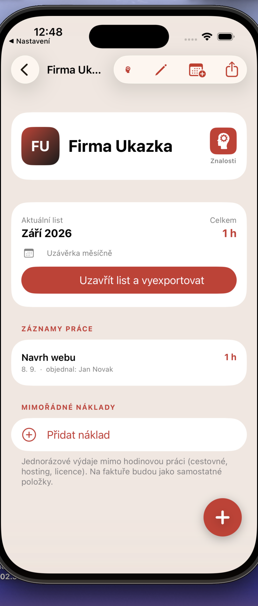
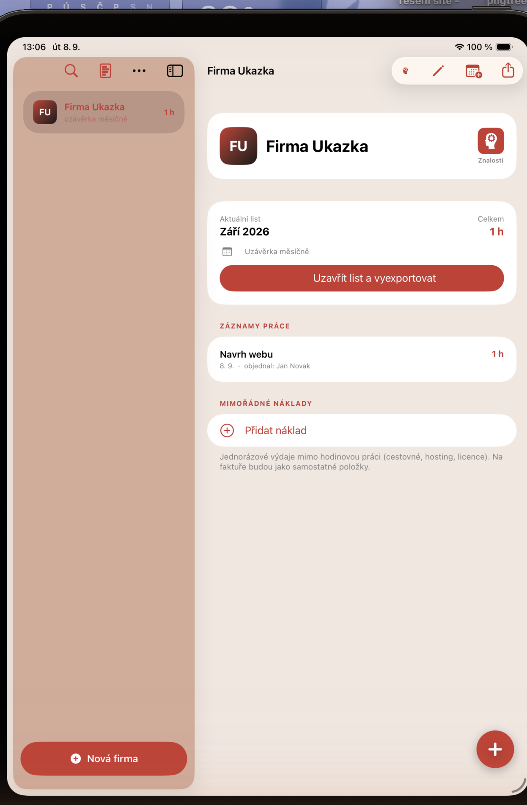

V testování — Zkoušejí to první uživatelé. Napište na redapps.support@gmail.com, jestli chcete vědět, až to bude.
Na všech zařízeních
Data leží ve složce, kterou si vyberete. Ve složce v iCloud Drive se synchronizují mezi Macem, iPadem i iPhonem.
Z výkazu rovnou faktura
Uzavřete list a v RED FAKTu na vás čeká rozpracovaná faktura.
Znalostní báze u firmy
Hesla, IP adresy, postupy a kontakty u zákazníka, ke kterému patří. Celé to jde poslat jako zaheslovaný report.
Chystá se verze pro firmy
Plánujeme verzi pro malé firmy, která umí sbírat výkazy od techniků nebo dalších pracovníků na jednom místě. Zatím ve fázi plánování.
Co aplikace umí
- Evidence odpracovaných hodin pro každou firmu zvlášť — jedna firma, jeden otevřený výkaz
- Karty firem sdílené s RED FAKTem — společný seznam zákazníků s obousměrnou synchronizací
- Údaje firmy — logo, IČO, DIČ, hodinová sazba, sazba DPH, měna a vlastní popis položky na faktuře
- Hlídání předplacených hodin s upozorněním při 90 % čerpání a po překročení limitu
- Uzávěrka výkazu měsíčně nebo ručně, podle domluvy s klientem
- Zápis práce s datem, popisem, objednatelem, štítky a přílohami — diktování hlasem přímo v zařízení
- Rychlé zopakování pravidelného záznamu jedním tahem
- Založení záznamu přímo ze schůzky v Kalendáři, se spočítaným trváním
- Zaokrouhlování odpracovaných hodin na celé, půl nebo čtvrt hodiny, nebo vůbec
- Mimořádné náklady evidované zvlášť a přenesené na fakturu jako samostatné položky
- Uzavření výkazu jedním tlačítkem s přehledným PDF — rozpis prací, rozpad podle štítků, přílohy, stránkování A4
- Export výkazu do XLSX s rozpadem hodin podle štítků
- Koncept faktury vytvořený rovnou v RED FAKTu z uzavřeného výkazu, se sledováním jeho stavu
- Sdílení PDF a XLSX systémovým sdílením nebo e-mailem se souhrnem
- Měsíční přehled napříč firmami — hodiny a peníze podle měny, upozornění na výkazy čekající na uzávěrku
- Hledání napříč historií všech firem a výkazů
- Zámek aplikace otiskem prstu, obličejem nebo systémovým heslem
- Šifrování dat sdílené s RED FAKTem, se záložním klíčem pro nová zařízení
- Znalostní báze ke každé firmě — text, seznam, tabulka, hesla, servery a adresy, s exportem do zaheslovaného PDF
- Synchronizace mezi Macem, iPhonem a iPadem přes iCloud Drive nebo čistě lokální úložiště, s widgetem a ikonkou v liště Macu
Jak to vypadá



Bezpečnost a soukromí
Aplikace nesbírá data uživatelů. Neprovozujeme server, nemáme k vašim datům přístup a nedržíme si žádnou kopii. Žádná analytika, žádná reklama, žádné knihovny třetích stran, žádná registrace.
iOS a iPadOS 17.6 · macOS 14.6